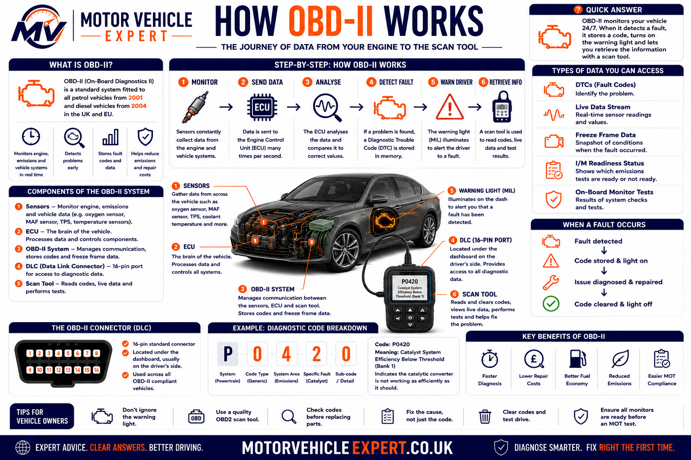
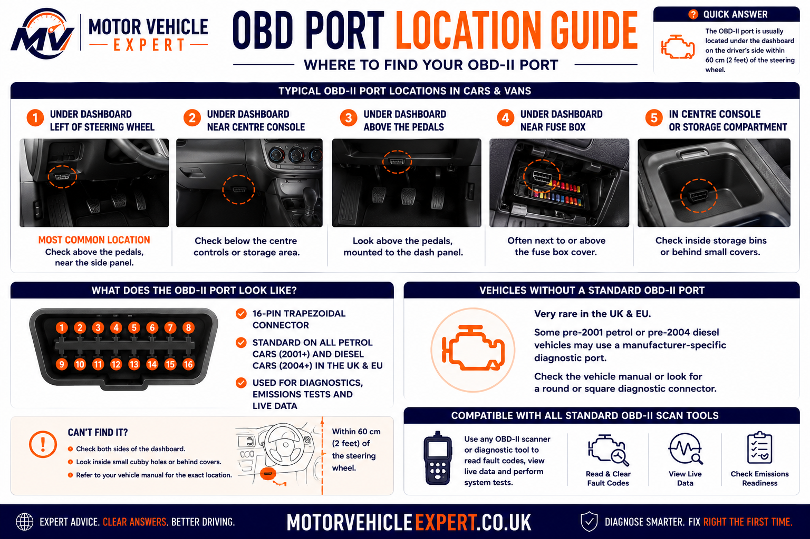
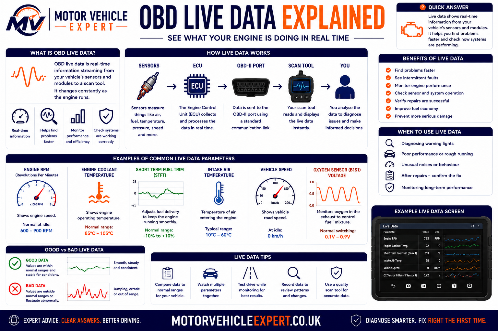
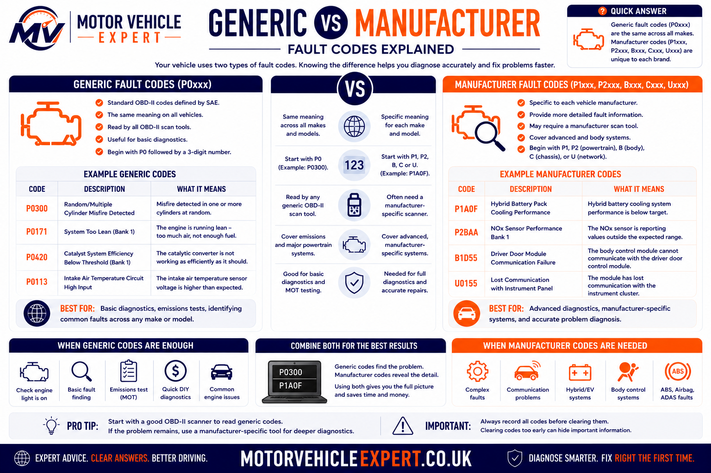
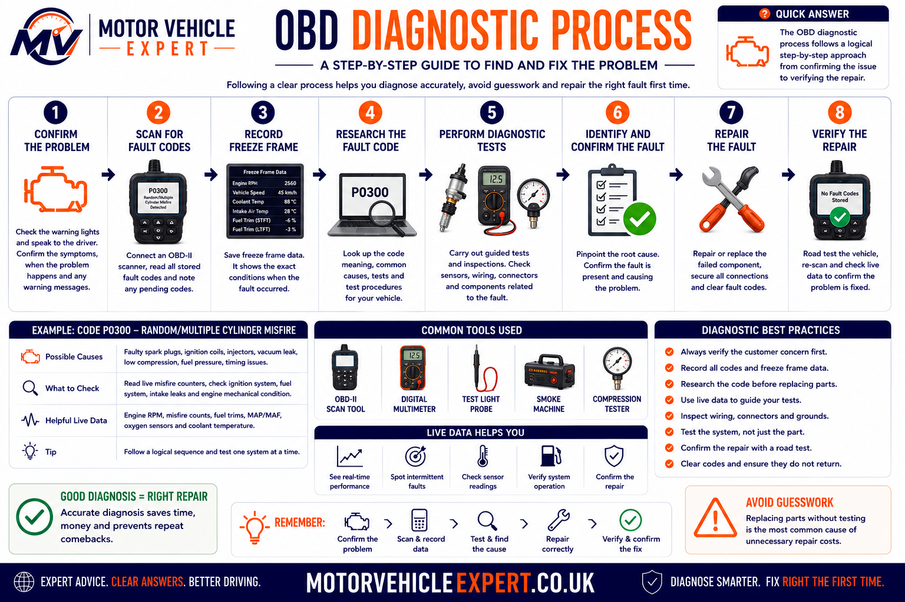

What Is OBD-II and What Does It Do?
OBD-II is a standardised vehicle diagnostic system that allows a compatible scan tool to communicate with control modules through the vehicle’s diagnostic connector. It can provide fault codes, code status, emissions-monitor information, freeze-frame evidence and selected live operating values.
The system helps identify which circuit, monitored function or operating condition requires investigation. It does not automatically identify the exact failed part, and it cannot replace physical inspection, electrical testing or mechanical diagnosis.
A basic code reader may only access generic engine and emissions information. More capable equipment can communicate with manufacturer-specific systems such as ABS, airbags, electronic parking brakes, body modules and transmission controllers, depending on the vehicle and the scanner’s software coverage.
Identifies the Detected Problem Area
A diagnostic trouble code records the system and failure conditions recognised by the control module.
Records Conditions Around the Fault
Engine speed, load, temperature, speed and fuel-control values may help reveal when the fault occurred.
Shows Current Operating Values
Technicians compare sensor readings, calculated values and control commands while the vehicle is operating.
Shows Whether Monitors Have Run
Incomplete monitors may indicate that codes were recently cleared, battery power was lost or the required drive conditions have not yet been completed.
| OBD information | What it tells you | What it does not prove |
|---|---|---|
| Diagnostic trouble code | The circuit, system or operating condition detected as abnormal | That the component named in the description has definitely failed |
| Freeze-frame data | Selected operating conditions when the code was stored | The complete history of every event before and after the fault |
| Live data | Current values reported or calculated by the control system | That every displayed value is mechanically correct or independently measured |
| Readiness status | Whether supported emissions monitors have completed their self-tests | That every vehicle system is fault-free |
| Cleared warning light | Stored information was erased or reset where permitted | That the original fault was repaired |
A sensor code can be caused by damaged wiring, a poor connector, missing power or earth, an air leak, incorrect mechanical operation or another component affecting the sensor’s reading. Confirm the root cause before authorising parts.
Use the live Motor Vehicle Expert diagnostic tools and supporting guides to understand the warning, search the stored code and plan the next inspection.
Use the Motor Vehicle Expert Diagnostic App
Reading an OBD-II code is useful, but a code number alone rarely explains the complete fault. The Motor Vehicle Expert Diagnostic App helps you organise the warning light, symptoms, stored code and driving behaviour before deciding what should be inspected next.
Describe What the Vehicle Is Doing
Record whether the engine is difficult to start, losing power, misfiring, using excessive fuel, producing smoke, entering limp mode or displaying a warning light.
- Warning light colour and behaviour
- When the fault first appeared
- Hot, cold, idle or acceleration conditions
- Any recent repairs or battery disconnection
- Stored diagnostic trouble codes
Combine the Code With Supporting Evidence
A useful diagnostic direction considers the fault code alongside freeze-frame values, live data, vehicle history and physical inspection rather than treating the scanner description as a confirmed failed part.
- Check whether the code is pending or confirmed
- Review freeze-frame conditions
- Compare relevant live-data values
- Inspect wiring, connectors and related systems
- Test before replacing components
Save the exact code numbers, descriptions, status and freeze-frame information first. Clearing codes can remove valuable evidence and reset readiness monitors, making an intermittent fault harder to investigate.
How OBD-II Is Used During Real Vehicle Diagnosis
In a professional diagnostic process, the scan tool is used to gather evidence. It is not used as an automatic parts-ordering machine. The technician first confirms the driver’s complaint, checks the vehicle’s condition and then uses the diagnostic information to narrow the investigation.
Confirm the Complaint
The technician establishes exactly what the vehicle is doing, when the problem occurs and whether the fault can be reproduced safely.
Perform an Initial Inspection
Battery condition, fluid levels, disconnected hoses, damaged wiring, loose connectors and obvious mechanical problems are checked before relying on scan data.
Carry Out a Full System Scan
Relevant control modules are scanned for current, pending, historic and communication-related fault codes.
Preserve Diagnostic Evidence
Codes, freeze-frame values and readiness status are recorded before anything is cleared or disconnected.
Test the Suspected System
Live data, electrical measurements, pressure tests, smoke testing, mechanical inspection or component activation are used as appropriate.
Confirm the Repair
After the root cause is corrected, the vehicle is retested and rescanned to confirm that the fault does not return.
For example, a lean-mixture code may be caused by an intake air leak, low fuel pressure, an exhaust leak, incorrect airflow measurement, injector trouble or contaminated sensor information. The code describes the detected condition—not necessarily the original cause.
A vehicle can have worn mechanical components, poor compression, a slipping clutch, noisy suspension, internal gearbox damage or an intermittent electrical problem without storing a useful generic OBD-II code.
What Does OBD Stand For?
OBD stands for on-board diagnostics. It describes the vehicle’s built-in ability to monitor selected systems, recognise certain faults and provide diagnostic information through warning lights, stored codes and electronic communication.
Modern vehicles use electronic control modules to monitor inputs from sensors, process operating conditions and command components such as injectors, ignition coils, throttle actuators, cooling fans, turbo controls and emissions devices.
When a monitored value falls outside the expected range, a circuit behaves incorrectly or an emissions-related test fails, the control module may record a diagnostic trouble code. Depending on the fault and the vehicle strategy, it may also illuminate a warning light or restrict performance.
Built Into the Vehicle
Monitoring and fault detection are carried out by electronic control systems installed within the vehicle.
Information for Investigation
The system supplies evidence that helps identify the affected circuit, function or operating condition.
Continuous and Conditional Tests
Some checks run continuously, while others require specific temperatures, speeds, loads or driving conditions.
Scanner Access Through the Port
A compatible diagnostic tool communicates with supported modules through the vehicle’s diagnostic connector.
The connector under the dashboard is only the physical access point. OBD-II also includes communication standards, emissions-related monitoring, diagnostic trouble codes, data parameters and agreed scanner functions.
OBD-I, OBD-II and EOBD Explained
Early on-board diagnostic systems were often manufacturer-specific. Connectors, code formats, test procedures and scanner equipment varied widely, which made diagnosis less consistent between different vehicle brands.
OBD-II introduced a more standardised approach to emissions-related diagnostics. EOBD applied comparable requirements to relevant European-market vehicles, including those used in the UK.
| System | General characteristics | Diagnostic implications |
|---|---|---|
| OBD-I | Early manufacturer-led diagnostic systems with varying connectors, code formats and access methods | Often required brand-specific procedures, adapters or equipment |
| OBD-II | Standardised diagnostic connector and common emissions-related diagnostic functions | Generic scanners can access core information on compatible vehicles |
| EOBD | European implementation of standardised emissions-related on-board diagnostics | Commonly encountered on UK and European-market petrol and diesel vehicles |
| Manufacturer diagnostics | Additional brand-specific codes, module access, live values, tests and programming functions | Usually requires enhanced scanner coverage or manufacturer-level equipment |
A Common Diagnostic Connector
Compatible vehicles use the familiar 16-pin diagnostic connector, although the communication pins and supported protocols can vary.
Generic Emissions-Related Codes
Standardised codes allow basic scanners to identify common powertrain and emissions faults across many vehicle makes.
Manufacturer-Specific Information
Advanced tools may access additional codes and functions that are not available through basic generic OBD-II communication.
Do not assume that every vehicle supports the same data, modules or diagnostic functions. Coverage depends on vehicle age, fuel type, market specification, manufacturer design and the software capabilities of the scan tool.
Why Was OBD-II Introduced?
OBD-II was developed primarily to improve the monitoring and diagnosis of emissions-related vehicle systems. Standardisation also made it easier for suitable diagnostic equipment to retrieve core fault information across different vehicle manufacturers.
Monitor Emissions-Control Performance
The system checks whether supported components and operating conditions remain capable of controlling exhaust emissions.
Recognise Abnormal Conditions
Control modules compare circuits, sensor behaviour and calculated results against programmed expectations.
Provide Common Diagnostic Access
A standard connector and common diagnostic services allow compatible tools to retrieve core information.
Help Technicians Narrow the Fault
Codes and data reduce the area requiring investigation, although further testing is still necessary.
Alert the Driver to a Detected Fault
The engine management light or malfunction indicator lamp may illuminate when a qualifying emissions-related fault is recognised.
A steady light commonly indicates a stored fault requiring diagnosis. A flashing light can indicate a more urgent condition, such as a severe misfire with a risk of catalytic-converter damage.
Read the Engine Management Light Guide →Preserve Information About the Fault
Depending on the vehicle and failure, the system may store a fault code, code status, freeze-frame snapshot and monitor information.
This evidence helps establish whether the problem is current, intermittent, recently cleared or waiting for additional confirmation.
Explore the Fault Codes Knowledge Centre →Its standardised core is heavily focused on the powertrain and emissions system. Broader access to ABS, airbags, steering, body electronics and other modules depends on the vehicle and the diagnostic equipment being used.
How Does OBD-II Work?
OBD-II works by allowing vehicle control modules to monitor inputs, evaluate operating conditions, recognise qualifying faults and communicate diagnostic information to a compatible scan tool through the diagnostic connector.
The complete process begins inside the vehicle. Sensors and electrical circuits provide information to a control module. The module compares that information with expected values and operating strategies. When the conditions for a fault are satisfied, diagnostic evidence can be stored.

Sensors and Circuits Supply Information
Inputs can include temperature, pressure, airflow, oxygen content, throttle position, crankshaft speed, vehicle speed and electrical circuit status.
The Control Module Processes the Data
The ECU or another module uses programmed logic to calculate operating commands and assess whether monitored values are plausible.
A Fault Condition Is Recognised
A code may be generated when a value is outside range, a circuit is open or shorted, a response is too slow or a monitored test fails.
Diagnostic Evidence Is Stored
The module may record a pending or confirmed code, fault status, freeze-frame values and information about monitor completion.
The Scanner Requests Information
The scan tool connects through the OBD port and requests supported information using the relevant communication protocol.
The Technician Interprets the Evidence
Codes and data are compared with symptoms, specifications and test results to identify and confirm the actual root cause.
The ECU Does More Than Store Codes
The engine control unit continuously manages functions such as fuelling, ignition timing, boost control, idle speed, cooling-fan operation and emissions devices.
Fault detection is one part of a much larger control strategy. A value displayed by the scanner may be a direct sensor input, a calculated result or a commanded output.
The Scanner Requests and Displays Information
The scanner does not independently discover every fault. It asks the vehicle for information that the connected module supports and then presents that information to the user.
The depth and accuracy of the display depend on scanner quality, software coverage, vehicle compatibility and the technician’s interpretation.
A basic scanner may communicate with the engine ECU but fail to access ABS, airbag, transmission or body-control systems. A message stating “no codes found” may only mean that no codes were found in the module or diagnostic mode that was scanned.
The vehicle detects conditions, stores information and makes supported data available. The technician must still decide whether the evidence points to a wiring fault, sensor problem, actuator issue, software condition, emissions failure or mechanical defect.
Where Is the OBD-II Port Located?
The OBD-II port is the vehicle’s main physical diagnostic connection. On most compatible cars and light vehicles, it is a 16-pin socket positioned inside the passenger compartment where a technician or vehicle owner can connect a suitable scan tool without dismantling major trim.
The exact location varies by vehicle manufacturer, model and year. It is commonly fitted beneath the dashboard on the driver’s side, around the lower steering-column trim, near the centre console or behind a small removable cover.

Beneath the Steering Column
Many vehicles position the diagnostic socket underneath the driver’s side dashboard, close to the steering column or lower knee panel.
Behind a Small Trim Cover
Some manufacturers conceal the connector behind a labelled flap, fuse-box cover or removable lower-dashboard panel.
Near the Centre Console
The port may be positioned beside the centre console, beneath the dashboard centre section or close to the handbrake area.
Inside a Storage Compartment
On some vehicles, the connector is placed inside a small storage pocket, behind an ashtray-style panel or close to the passenger-side trim.
The port is often visible from below or protected by a small access cover. Do not force dashboard panels or pull on wiring to find it. The vehicle handbook or manufacturer repair information may identify the exact location.
A bulky scan tool or adapter can interfere with the driver’s legs, pedals or lower trim. Remove handheld equipment before normal driving unless the device is specifically designed for safe long-term installation.
What Does the OBD-II Connector Look Like?
The diagnostic connector has a distinctive trapezoidal shape with two rows of terminal positions. Its shape helps prevent the plug from being inserted incorrectly.
Although the connector provides 16 possible pin positions, every vehicle does not use every pin. Some positions are reserved for standard power, earth and communication functions, while others may be unused or assigned to manufacturer-specific systems.
| Connector feature | Purpose | Important point |
|---|---|---|
| 16-pin layout | Provides a standard physical connection for compatible diagnostic equipment | Not every pin is populated or used on every vehicle |
| Trapezoidal shape | Helps align the diagnostic plug in the correct direction | The connector should fit without excessive force |
| Power supply | Can power many handheld readers and wireless adapters | A blown fuse or wiring fault can prevent the scanner from powering up |
| Earth connections | Provide electrical reference and circuit return paths | Poor earth integrity can cause communication or power problems |
| Communication terminals | Carry diagnostic requests and vehicle-module responses | The terminals used depend on the communication system fitted |
Bridging the wrong terminals, applying voltage to a communication circuit or damaging a terminal can create electrical faults. Pin testing should be performed using correct wiring information and suitable test equipment.
What Can an OBD-II Scanner Read?
A compatible OBD-II scanner can request diagnostic information from the vehicle’s control systems. The exact information available depends on the scanner, vehicle, control module and level of software coverage.
A basic generic reader may provide emissions-related engine codes and limited live data. An enhanced professional tool may communicate with many vehicle modules, display manufacturer-specific values, operate components and perform service functions.
Stored, Pending and Permanent Codes
The scanner may display the exact diagnostic trouble code, a short description and its current status.
- Generic powertrain codes
- Pending fault codes
- Confirmed fault codes
- Permanent emissions codes
- Manufacturer-specific codes where supported
Current Sensor and Operating Data
Live data allows selected values to be viewed while the ignition is on or the engine is running.
- Engine speed
- Coolant temperature
- Airflow and manifold pressure
- Fuel-trim information
- Oxygen-sensor or mixture-control data
Freeze Frame and Monitor Status
The scanner may retrieve the conditions recorded when a qualifying fault was stored and show whether supported emissions tests have completed.
- Freeze-frame snapshot
- Readiness-monitor status
- Malfunction-indicator status
- Distance or time since clearing
- Vehicle identification information
A low-cost generic reader may only access the engine or emissions system. Access to ABS, airbags, parking brakes, steering, body electronics and other control modules normally requires enhanced scanner software and compatible vehicle coverage.
Generic OBD-II Information
Generic OBD-II access is designed around standardised powertrain and emissions information. It is the area most likely to work across different makes when using an entry-level scanner.
Emissions-Related Fault Codes
Generic readers commonly retrieve P0-series codes and other standardised powertrain information.
Standard Live Parameters
Common values may include engine speed, load, temperature, throttle position and fuel-control information.
Freeze-Frame Information
Selected operating values may be stored when an emissions-related code is recorded.
Readiness Status
The scanner may show which supported emissions monitors are complete, incomplete or unavailable.
Enhanced Manufacturer-Level Information
Enhanced diagnostic access goes beyond the generic OBD-II functions. A suitable scanner may communicate directly with additional control modules and display data created specifically for that manufacturer and vehicle.
Anti-Lock Braking System
Enhanced access may provide wheel-speed data, hydraulic-unit codes, sensor faults and relevant module information.
Airbag and Restraint Systems
Compatible equipment may retrieve faults relating to airbags, seat-belt pretensioners, occupancy systems and impact sensors.
Gearbox Control Information
Scanner coverage may include transmission codes, selected gear, temperature, speed sensors and solenoid commands.
Comfort and Convenience Modules
Depending on the vehicle, access may extend to doors, windows, locking, lighting, climate control and body electronics.
Electric Power Steering
Enhanced tools may display steering-angle information, motor faults, supply-voltage problems and calibration status.
Electronic Parking Brake
Suitable equipment may retrieve codes, operate service mode and support rear brake maintenance procedures.
A tool advertised as a full-system scanner may still have limited coverage on certain makes, models or years. Confirm compatibility before relying on a scanner for a specific module or service function.
Common Information Available Through a Scan Tool
| Scanner function | What it provides | Diagnostic value |
|---|---|---|
| Read fault codes | Code number, description and status from supported modules | Identifies the system or failure condition requiring investigation |
| Clear fault codes | Requests deletion of erasable diagnostic information | Useful after repair, but does not correct the cause of the fault |
| View live data | Current sensor, calculated and commanded values | Helps compare system behaviour during testing |
| View freeze frame | Selected operating conditions recorded when a qualifying fault occurred | Helps establish load, temperature and speed conditions around the event |
| Check readiness monitors | Completion status of supported emissions self-tests | Can reveal recent clearing, battery disconnection or incomplete drive cycles |
| Module identification | Control-unit information, software details or vehicle identification where supported | Helps verify communication and identify the installed system |
| Active tests | Commands selected actuators through the control module | Helps test components such as fans, valves, pumps, lamps or solenoids |
| Service functions | Resets, adaptations, calibrations or maintenance modes | Supports specific repair and servicing procedures where compatible |
Erasing diagnostic information may temporarily switch off a warning light, but the code can return as soon as the control module detects the fault again. Clearing also removes evidence and can reset emissions readiness monitors.
A fault in one system can affect several others. Low system voltage, communication problems or a shared sensor fault may create codes in multiple modules. A complete scan provides more context than reading the engine ECU alone.
Generic OBD-II Access vs Enhanced Diagnostics
The term “OBD-II scanner” covers a wide range of devices. Two tools can use the same diagnostic connector but provide very different levels of information and control.
Basic Engine and Emissions Information
Generic access focuses on the standardised functions required for compatible emissions-related diagnostics.
- Generic powertrain codes
- Basic code clearing
- Standard live-data parameters
- Freeze-frame information
- Readiness-monitor status
Manufacturer and Full-System Diagnostics
Enhanced access uses manufacturer-specific software to communicate with additional modules and functions.
- ABS and airbag diagnostics
- Transmission and body-module access
- Manufacturer-specific live data
- Active component tests
- Service resets and calibrations
| Capability | Basic generic reader | Enhanced diagnostic tool |
|---|---|---|
| Generic engine fault codes | Usually available | Available |
| Generic live data | Usually limited | Usually broader and graphable |
| ABS fault codes | Commonly unavailable | Available where supported |
| Airbag fault codes | Commonly unavailable | Available where supported |
| Manufacturer-specific codes | Limited or unavailable | Available with correct software coverage |
| Active actuator tests | Usually unavailable | Available on supported systems |
| Service resets | Usually unavailable | Often available, depending on the tool |
| Coding or programming | Unavailable | Limited to suitable specialist equipment and procedures |
Scanner quality should be judged by vehicle coverage, software support, data accuracy, update policy, technical information and the functions required for the repair—not price alone.
What Can’t an OBD-II Scanner Do?
An OBD-II scanner is a diagnostic information tool. It can reveal fault codes, operating values and control-module evidence, but it cannot automatically identify every failed component or confirm every repair.
A scanner reports what the vehicle’s control modules have detected. The technician must still interpret that evidence, inspect the vehicle and carry out suitable electrical, mechanical or pressure tests.
It Cannot Automatically Identify the Failed Part
A fault code normally identifies a circuit, system or operating condition. It does not always prove that the component named in the code description has failed.
- Wiring faults can imitate component failure
- Air leaks can create mixture codes
- Low voltage can affect several modules
- Mechanical faults can produce sensor-related codes
- One root fault can trigger several secondary codes
It Cannot Measure Every Form of Wear
Many mechanical problems do not produce a diagnostic trouble code, particularly when the relevant system is not electronically monitored.
- Worn brake pads or discs
- Loose suspension joints
- Wheel-bearing noise
- Clutch wear or clutch slip
- Internal engine wear
It Cannot Replace Workshop Test Equipment
Diagnostic data often identifies the next test rather than delivering the final answer.
- Multimeter and oscilloscope testing
- Fuel-pressure testing
- Smoke testing for air leaks
- Compression or leak-down testing
- Vacuum and exhaust-pressure testing
A Fault Can Exist Without a Code
A component may be weak, intermittent or mechanically damaged without crossing the ECU’s threshold for storing a fault.
Descriptions Can Be Misleading
Short scanner descriptions simplify technical definitions and may encourage incorrect parts replacement.
Basic Readers Miss Other Modules
A generic reader may report no faults even when ABS, airbag, body or transmission codes are stored.
The Problem May Not Be Active
Wiring movement, heat, moisture or vibration can create faults that disappear before testing begins.
Why a Fault Code Does Not Automatically Name the Repair
Diagnostic trouble codes are created when a control module detects an electrical value, calculated result or system response outside its expected range. That abnormal result can have several possible causes.
| Scanner evidence | Possible causes | Correct next step |
|---|---|---|
| Oxygen-sensor lean code | Intake leak, low fuel pressure, exhaust leak, airflow error, injector fault or sensor problem | Review fuel trims, inspect for air leaks and test the fuel and sensor systems |
| Coolant-temperature sensor code | Failed sensor, damaged wiring, poor connector contact, low coolant or thermostat-related behaviour | Compare live temperature data with actual engine temperature and test the circuit |
| Misfire code | Ignition fault, injector problem, compression loss, air leak, fuel-pressure issue or timing fault | Identify the affected cylinder and test ignition, fuelling and mechanical condition |
| Boost-pressure code | Split hose, sticking actuator, turbocharger wear, sensor error, vacuum fault or control-solenoid problem | Inspect the intake and control system and compare requested boost with actual boost |
| Communication code | Low battery voltage, module power loss, earth fault, damaged network wiring or failed module | Check battery condition, module supplies, earths and network integrity |
Replacing the component named in a code can waste money and leave the original fault unresolved. Confirm power supplies, earths, wiring, signal behaviour and mechanical condition before condemning an expensive component.
The best diagnostic question is not “Which part should I replace?” It is “What fault condition has the vehicle detected, and which test will confirm why?”
Common OBD-II Diagnostic Mistakes
Scan tools make diagnostic information easier to access, but they also make it easy to reach conclusions too quickly. The mistakes below commonly lead to wasted parts, recurring warning lights and incomplete repairs.
Clearing Codes Before Recording Them
Erasing codes before noting their status, freeze-frame data and related module faults destroys useful evidence.
Treating the Code Description as a Diagnosis
A description is only a summary of the monitored fault condition. It is not proof that the named component has failed.
Looking at One Module Only
Engine, ABS, transmission, steering and body-module faults may be connected through shared power, earth or communication circuits.
Ignoring Battery Voltage
Low voltage during starting or charging problems can create misleading communication and control-module codes.
Reading Live Data Without Context
A value must be judged against engine temperature, load, speed, operating mode and known-good behaviour.
Failing to Confirm the Repair
A warning light switching off does not prove that the fault has been repaired permanently.
Mistakes That Can Hide the Original Fault
Disconnecting the Battery Too Early
Battery disconnection can clear volatile information, reset adaptations and cause readiness monitors to become incomplete.
- Stored evidence may be lost
- Idle or transmission adaptations may reset
- Clock and convenience settings may be affected
- Security or radio procedures may be required
- New low-voltage codes may be introduced
Clearing the Warning Light Before Inspection
A seller or repairer may clear codes shortly before a vehicle inspection. The light can remain off until the relevant monitor runs again.
- Check readiness-monitor status
- Look for incomplete monitors
- Review distance since codes were cleared
- Scan again after a suitable road test
- Compare warning-light behaviour at ignition-on
The scanner may have limited module coverage, the fault may not meet the code-setting criteria, or the information may have been cleared. Continue with visual checks and symptom-based testing where necessary.
Save or photograph the code list, code status, freeze-frame data, readiness status and relevant live data. This creates a useful before-and-after record and helps identify secondary or historic faults.
OBD-II Live Data Explained
Live data displays information being reported, calculated or commanded by the vehicle’s control modules while the ignition is on or the engine is running.
It allows a technician to observe how the system behaves under different conditions rather than relying only on a stored code. Live data is especially useful when a fault is intermittent, load-dependent or caused by several interacting systems.

Common OBD-II Live-Data Parameters
RPM
Shows calculated engine speed and helps confirm cranking-speed signals, idle stability and engine response.
Coolant Temperature
Helps assess cold-start enrichment, warm-up behaviour, cooling-system operation and sensor plausibility.
Airflow or Manifold Pressure
Shows how the ECU estimates incoming air and can support diagnosis of leaks, restrictions and load-calculation faults.
Throttle and Pedal Position
Allows comparison between accelerator demand, throttle command and actual throttle response.
Short-Term Fuel Trim
Shows the ECU’s immediate correction to the calculated air-fuel mixture.
Long-Term Fuel Trim
Shows mixture correction learned over time and can indicate persistent rich or lean operation.
Oxygen or Lambda Data
Helps assess mixture response, catalyst monitoring and closed-loop fuel-control behaviour.
Control-Module Voltage
Can reveal low supply voltage, charging problems or voltage instability affecting module operation.
Sensor Data, Calculated Data and Commanded Data
Not every live-data value comes directly from a physical sensor. Some values are calculated by the ECU, while others show what the control module is commanding a component to do.
Sensor Data
A physical sensor reports information such as temperature, pressure, speed or position.
- Coolant temperature
- Airflow
- Manifold pressure
- Wheel speed
- Accelerator position
Calculated Data
The control module combines several inputs to calculate a value used for operation or diagnosis.
- Calculated engine load
- Fuel trim
- Estimated torque
- Calculated airflow
- Catalyst efficiency result
Commanded Data
A commanded value shows what the control module is requesting, which may differ from the component’s actual response.
- Commanded throttle angle
- Requested boost pressure
- Cooling-fan command
- EGR command
- Fuel-pressure request
A large difference between what the ECU requests and what the system achieves can help identify control, actuator, pressure, airflow or mechanical problems.
How Live Data Helps Diagnose a Fault
Confirm the Operating Conditions
Note whether the engine is cold or warm, idling or loaded, stationary or being driven.
Select Relevant Parameters
Display only the values linked to the suspected system so the scanner can update them clearly and quickly.
Check Plausibility
Decide whether the value is physically possible and appropriate for the current operating condition.
Compare Related Values
Compare values that should agree, such as requested and actual pressure or multiple temperature sensors after a cold soak.
Reproduce the Complaint
Observe the data under the conditions that trigger hesitation, loss of power, poor starting or the warning light.
Confirm With a Physical Test
Use suitable workshop testing to confirm whether the problem is the sensor, circuit, actuator or mechanical system.
Example Live-Data Interpretations
| Live-data observation | What it may suggest | Further checks |
|---|---|---|
| Coolant temperature shows very cold on a warm engine | Sensor, connector, wiring or reference-voltage fault | Compare scanner value with actual temperature and test the sensor circuit |
| High positive fuel trims at idle that improve with engine speed | Possible intake or vacuum leak | Inspect hoses, intake seals and crankcase ventilation; perform a smoke test |
| Requested boost rises but actual boost remains low | Boost leak, actuator fault, control problem, restriction or turbocharger issue | Pressure-test the intake and inspect actuator and control operation |
| Throttle command changes but actual position does not follow | Throttle-body, wiring, adaptation or mechanical sticking problem | Inspect the connector and throttle body and perform guided testing |
| Control-module voltage drops heavily during cranking | Weak battery, poor connection, starter draw or earth fault | Perform battery, voltage-drop and starting-system tests |
| One wheel-speed value differs significantly from the others | Sensor, reluctor ring, bearing, wiring or tyre-size issue | Inspect the affected wheel and compare signal quality with suitable equipment |
Normal values vary by engine design, temperature, altitude, load, fuel type and manufacturer strategy. Use technical information and known-good comparisons where available.
A scanner may refresh values slowly when dozens of parameters are selected. Choose a small group of relevant values when investigating a fast or intermittent fault.
Road-test data should be recorded by the scanner, monitored by a passenger or collected using safe workshop procedures. The driver must remain focused on controlling the vehicle.
OBD-II Freeze-Frame Data Explained
Freeze-frame data is a stored snapshot of selected vehicle operating conditions captured when the control module records a qualifying diagnostic trouble code.
Instead of showing what the vehicle is doing now, freeze-frame information helps show what was happening when the fault was detected. This can be extremely valuable when the warning light is no longer active or the problem only occurs under particular driving conditions.
Shows When the Fault Occurred
Freeze-frame data can indicate whether the fault occurred during cold starting, warm idle, acceleration, cruising or high engine load.
- Engine speed
- Vehicle speed
- Engine load
- Coolant temperature
- Throttle position
Helps Narrow the Test Conditions
The stored values can help a technician reproduce the complaint and choose the most relevant inspection or test.
- Cold or fully warmed engine
- Idle or road speed
- Light or heavy load
- Open-loop or closed-loop operation
- Low or normal system voltage
Complements the Fault Code
A code identifies the detected condition, while freeze-frame data provides a limited picture of the circumstances surrounding it.
- Supports code interpretation
- Highlights temperature-related faults
- Reveals load-dependent problems
- Can expose low-voltage events
- Helps distinguish idle and driving faults
It is normally a single stored snapshot containing a limited selection of parameters. It does not show how every value changed before and after the fault occurred.
Common Freeze-Frame Parameters
The exact data available varies by vehicle, fault and scanner. Generic emissions-related freeze-frame information commonly includes some of the parameters below.
RPM
Helps establish whether the engine was cranking, idling, cruising or operating at higher speed.
Vehicle Speed
Shows whether the fault occurred while stationary, at low speed or during normal road driving.
Coolant Temperature
Indicates whether the engine was cold, warming up or fully at operating temperature.
Calculated Engine Load
Helps show whether the fault occurred under light demand, acceleration or heavier engine load.
MAF or MAP Reading
May indicate the estimated airflow or manifold pressure when the fault was recognised.
Fuel-Trim Values
Can show whether the ECU was adding or removing fuel when the fault occurred.
Throttle Position
Helps distinguish closed-throttle idle conditions from acceleration or higher-load operation.
Control-Module Voltage
May reveal low-voltage conditions capable of affecting sensors, actuators or module communication.
How Freeze-Frame Data Supports Diagnosis
Identify the Associated Code
Confirm which diagnostic trouble code created the stored snapshot and whether the code is pending, confirmed or permanent.
Establish the Driving Condition
Use engine speed, vehicle speed, temperature, throttle and load to understand when the fault was detected.
Look for Implausible Values
A value that is impossible or inconsistent with the other data may point towards a sensor or circuit fault.
Compare Related Parameters
Compare coolant temperature, intake-air temperature, airflow, fuel trims and load to see whether the values agree logically.
Reproduce the Conditions Safely
Where appropriate, operate the vehicle under similar temperature, speed and load conditions while monitoring relevant live data.
Confirm With Physical Testing
Use wiring checks, pressure tests, smoke testing, mechanical inspection or waveform analysis to confirm the root cause.
Freeze-Frame Interpretation Examples
| Freeze-frame evidence | What it may indicate | Useful next checks |
|---|---|---|
| Lean-mixture code stored at warm idle with high positive fuel trims | Possible intake leak, crankcase ventilation leak or unmetered air entering at idle | Inspect intake hoses and seals and perform a smoke test |
| Lean-mixture code stored under heavy load at higher road speed | Possible low fuel pressure, restricted fuel supply or airflow-measurement error | Test fuel delivery and compare airflow and fuel-pressure data under load |
| Misfire code recorded immediately after cold starting | Possible ignition weakness, injector fault, compression issue or coolant intrusion | Perform cold-start testing and inspect ignition, fuelling and cylinder condition |
| Boost code stored during acceleration with high requested load | Possible boost leak, actuator problem, control fault, restriction or turbocharger issue | Compare requested and actual boost and inspect the intake and control systems |
| Sensor code stored with unusually low control-module voltage | The code may be secondary to a battery, charging, starter or connection problem | Test battery condition, charging voltage and voltage drop before replacing the sensor |
| Coolant-temperature code with an implausible temperature on a warm engine | Possible sensor, connector, wiring or reference-voltage fault | Compare actual temperature with scanner data and test the sensor circuit |
The most useful purpose of freeze-frame data is to identify the operating conditions that should be reproduced during testing. It should guide diagnosis rather than replace it.
Some vehicles store only one generic freeze-frame record, while others provide more detailed manufacturer-specific records. Later faults, code clearing, battery disconnection or scanner limitations may remove or hide the original information.
Once the diagnostic information is erased, the stored operating snapshot may be lost permanently. Save, photograph or print the data before carrying out repairs or resetting the system.
Freeze Frame vs Live Data
Freeze-frame data and live data serve different diagnostic purposes. Freeze frame shows selected values stored at the time of a qualifying fault, while live data shows what supported systems are reporting now.
| Diagnostic feature | Freeze-frame data | Live data |
|---|---|---|
| Time represented | The moment a qualifying fault was detected | Current vehicle operation |
| Data format | Stored snapshot | Continuously updating values |
| Main use | Identify the conditions surrounding a stored code | Observe system behaviour during testing |
| Availability | Only where the module stored a qualifying record | Available while communication and the relevant system are active |
| Best diagnostic approach | Use it to select the conditions to reproduce | Compare actual behaviour with expected values |
| Main limitation | Limited parameters from one stored moment | Can be misinterpreted without correct operating context |
Freeze-frame data helps establish when the fault occurred. Live data then allows the technician to reproduce those conditions, observe the system and confirm the cause with further testing.
OBD-II Readiness Monitors Explained
Readiness monitors are built-in self-tests performed by the engine control module (ECU) to check whether emissions-related systems are operating correctly. Rather than running continuously, many of these tests only complete when specific driving conditions have been met.
Every time the vehicle is driven, the ECU evaluates different sensors, actuators and emissions-control components. Once the required operating conditions have been satisfied, the relevant monitor changes from Incomplete to Complete. These monitor results form an important part of modern emissions diagnostics.
The Vehicle Tests Itself
The ECU continuously checks supported emissions systems while the vehicle is driven. Certain tests only begin when temperature, speed, engine load and other operating conditions are suitable.
- No manual testing required by the driver
- Runs automatically during normal use
- Different systems test at different times
- Some tests require several journeys
- Results are stored by the ECU
Confirms Which Tests Have Finished
A scan tool can display the status of supported readiness monitors, allowing technicians to see which self-tests have completed successfully.
- Complete
- Incomplete
- Not supported
- Manufacturer dependent
- Useful after repairs
Supports Accurate Diagnosis
Readiness information helps determine whether diagnostic testing is complete or whether additional driving is required before confirming a repair.
- Confirms self-tests have completed
- Supports emissions diagnosis
- Useful after clearing fault codes
- Helps verify successful repairs
- Provides additional diagnostic context
They are primarily designed to evaluate emissions-related systems required by OBD-II legislation. Mechanical wear, suspension faults, brake condition and many other vehicle defects are outside the scope of readiness monitoring.
Why Readiness Monitors Matter
A fault code may disappear after repairs or after being cleared with a scan tool, but that does not automatically prove the vehicle has passed every emissions self-test. Until the relevant monitors have completed, the ECU has not yet confirmed that the repaired system continues to operate correctly under real driving conditions.
Confirming the Fault Has Truly Been Resolved
Professional technicians normally check readiness monitors after completing repairs to ensure the ECU has successfully rerun the required self-tests.
- Repair completed
- Codes cleared if appropriate
- Vehicle driven through suitable conditions
- Relevant monitors complete
- No returning fault codes
Readiness Can Reveal Recently Cleared Codes
If numerous readiness monitors remain incomplete shortly after viewing a used vehicle, it may indicate that diagnostic information was recently erased or that the battery has been disconnected.
- Investigate incomplete monitors
- Review warning-light behaviour
- Perform a complete vehicle scan
- Road-test the vehicle
- Recheck diagnostic information afterwards
Types of OBD-II Readiness Monitors
Not every monitor applies to every vehicle. The systems available depend on the engine design, fuel type, emissions equipment and manufacturer. Some monitors run frequently, while others require very specific operating conditions before they can complete.
Monitors That Run Regularly
Certain systems are checked continuously whenever suitable operating conditions exist, allowing faults to be detected quickly.
Special Operating Conditions Required
Many emissions systems require specific temperatures, speeds, engine loads or driving patterns before testing begins.
Not Every Vehicle Supports Every Monitor
Petrol, diesel, hybrid and manufacturer-specific systems use different monitor strategies depending on vehicle design.
Automatically Managed
The ECU decides when sufficient operating conditions have been achieved before running each supported self-test.
| Monitor category | Purpose | Typical behaviour |
|---|---|---|
| Continuous monitors | Monitor essential engine operation during normal driving | Usually operate whenever suitable running conditions exist |
| Non-continuous monitors | Evaluate individual emissions systems under specific conditions | May require several complete drive cycles before reporting complete |
| Manufacturer-supported monitors | Additional monitoring depending on vehicle design | Availability varies between makes and models |
A monitor may simply not have had the opportunity to run yet. Recent battery disconnection, recently cleared fault codes or insufficient driving conditions commonly leave one or more monitors incomplete even when no active fault is present.
Readiness status provides valuable context, but it should never be viewed in isolation. Combining monitor status with diagnostic trouble codes, freeze-frame information and live data gives a much clearer picture of the vehicle's condition and helps avoid incorrect conclusions.
Common OBD-II Readiness Monitors
The readiness monitors shown by a scan tool depend on the vehicle’s fuel type, emissions equipment, model year and control strategy. Petrol and diesel vehicles do not necessarily support the same monitors, and a monitor listed as unavailable may simply not apply to that vehicle.
Some monitors operate continuously while the engine is running. Others are non-continuous tests that require a particular sequence of temperatures, speeds, loads and operating conditions before the ECU can complete them.
Continuous Readiness Monitors
Continuous monitors supervise essential engine operation whenever the ECU has sufficient information to assess the system. They normally begin running soon after the engine starts and continue while the vehicle is operating.
Misfire Monitoring
The ECU looks for changes in crankshaft speed that may indicate incomplete combustion in one or more cylinders.
- Can identify individual-cylinder misfires
- May distinguish random and cylinder-specific faults
- Severe misfire can cause a flashing warning light
- Not every misfire is caused by ignition components
- Mechanical and fuel faults must also be considered
Fuel-System Monitoring
The ECU assesses whether mixture control remains within the correction range available to the fuel-management system.
- Uses oxygen or lambda feedback
- Evaluates short- and long-term fuel correction
- Can detect persistent rich or lean operation
- May be affected by air leaks or fuel pressure
- Requires correct interpretation of fuel trims
Comprehensive Component Monitoring
The ECU checks the electrical operation and plausibility of many emissions-related sensors, actuators and circuits.
- Open- and short-circuit detection
- Signal-range monitoring
- Plausibility comparisons
- Actuator-response checks
- Manufacturer-specific coverage
It only means the ECU has completed the relevant monitoring strategy without detecting a qualifying fault. Mechanical wear, intermittent faults and problems outside the monitored thresholds may still exist.
Non-Continuous Readiness Monitors
Non-continuous monitors only run when their enabling conditions are satisfied. A vehicle may need to be started from cold, reach operating temperature, cruise steadily, accelerate, decelerate and remain within particular fuel-level or ambient-temperature limits.
Catalyst Monitor
Evaluates whether the catalytic converter is storing and treating exhaust gases effectively by comparing upstream and downstream sensor behaviour.
Heated Catalyst Monitor
Applies to vehicles fitted with a heated catalyst system and checks whether the system reaches its required operating condition.
Evaporative-System Monitor
Checks the fuel-vapour control system for leaks, flow faults or incorrect pressure behaviour where the vehicle supports this monitor.
Secondary-Air Monitor
Assesses the operation of secondary-air equipment used to introduce additional oxygen into the exhaust during selected conditions.
Oxygen-Sensor Monitor
Checks whether supported oxygen or lambda sensors respond within the required range and speed.
Oxygen-Sensor Heater Monitor
Tests the heater circuits that help exhaust sensors reach operating temperature quickly after starting.
EGR or VVT Monitor
May evaluate exhaust-gas recirculation, variable valve timing or another manufacturer-defined emissions-control strategy.
Particulate-Filter Monitor
Where supported, checks diesel particulate-filter pressure, regeneration performance and related exhaust-treatment behaviour.
Boost-Pressure Monitor
May compare requested and actual turbocharger pressure to detect underboost, overboost or control-system problems.
NOx or SCR Monitor
On suitable vehicles, monitors selective catalytic reduction, AdBlue delivery, NOx sensors and exhaust-treatment efficiency.
Exhaust-Sensor Monitor
May assess exhaust temperature, pressure, oxygen or other sensors used by diesel emissions systems.
Manufacturer-Defined Monitor
Some vehicles display additional readiness categories or combine several emissions tests under one monitor heading.
Readiness Monitor Reference Table
| Readiness monitor | What it checks | Common reasons it remains incomplete |
|---|---|---|
| Misfire | Detects combustion irregularities through changes in engine-speed behaviour | Usually continuous, but may be suspended by sensor, voltage or operating-condition faults |
| Fuel system | Evaluates whether mixture correction remains within the ECU’s control range | Engine not yet in closed loop, temperature too low or another enabling condition not met |
| Comprehensive components | Monitors emissions-related sensors, actuators and electrical circuits | Usually continuous, but testing may pause when required inputs are unavailable |
| Catalyst | Assesses catalytic-converter efficiency using exhaust-sensor behaviour | Insufficient warm-up, unsuitable cruise conditions or incomplete oxygen-sensor monitoring |
| Heated catalyst | Checks a heated catalytic-converter system where fitted | Required temperature, load or electrical conditions not achieved |
| Evaporative system | Checks fuel-vapour containment, purge flow and leak integrity | Fuel level outside the permitted range, ambient temperature unsuitable or vehicle not left standing |
| Secondary air | Evaluates secondary-air injection and its effect on exhaust readings | Cold-start conditions not achieved or air-injection system not commanded |
| Oxygen sensor | Checks sensor range, switching, response and plausibility | Exhaust temperature too low or required steady-driving conditions not achieved |
| Oxygen-sensor heater | Tests the heater circuit used to warm supported exhaust sensors | Required start-up, voltage or temperature conditions not completed |
| EGR or VVT | Checks exhaust-gas recirculation, valve timing or related flow control | Required load, speed, temperature or commanded operation not reached |
| DPF or particulate filter | Assesses soot loading, differential pressure, regeneration or filtration performance | Regeneration conditions not met, journeys too short or another exhaust fault prevents testing |
| Boost pressure | Compares requested boost with actual pressure and control response | Suitable acceleration or engine-load conditions not reached |
| NOx or SCR | Evaluates NOx sensors, AdBlue dosing and selective catalytic reduction | Exhaust temperature too low, dosing conditions not achieved or prerequisite monitors incomplete |
One scanner may display “Ready”, another may use “Complete”, and another may show “Passed”. Similarly, “Not Ready”, “Incomplete” and “Not Complete” can describe the same basic status. Check the tool’s legend before interpreting the result.
Why Are Readiness Monitors Incomplete?
An incomplete readiness monitor means the ECU has not yet finished the relevant self-test since its diagnostic memory was reset or since the required conditions became available.
It does not automatically mean the monitored system has failed. The vehicle may simply not have been driven through the correct sequence of operating conditions.
Fault Codes Were Recently Cleared
Clearing codes normally resets non-continuous readiness monitors. They remain incomplete until the ECU successfully reruns each supported test.
- Warning light may be temporarily off
- Freeze-frame evidence may be lost
- Adaptations may also be reset
- Drive-cycle testing will be required
- Faults may return after monitoring resumes
The Battery Was Disconnected
Battery replacement, disconnection or a severe low-voltage event can reset diagnostic memory and readiness status.
- Multiple monitors may become incomplete
- Clock or convenience settings may reset
- Low-voltage codes may be stored
- Idle adaptations may need relearning
- Several journeys may be required
The Vehicle Has Not Completed the Required Drive Cycle
Short journeys, heavy traffic or repeated cold starts may not provide the steady speed, temperature and load needed for certain monitors.
- Engine not fully warmed
- No sustained cruise period
- Too few cold starts
- Fuel level outside the required range
- Ambient conditions unsuitable
Another Problem Is Preventing the Test
One unresolved fault can stop a dependent monitor from running. For example, a sensor fault may prevent catalyst or fuel-system testing.
- Active engine fault codes
- Incorrect temperature information
- Fuel-control faults
- Low system voltage
- Communication problems
Journeys Are Too Short
Vehicles used mainly for short urban journeys may struggle to complete catalyst, evaporative, particulate-filter or exhaust-treatment monitors.
- Insufficient exhaust temperature
- Repeated interrupted warm-up
- No stable cruise conditions
- DPF regeneration may not complete
- Battery charge may remain low
The Tool May Report the Status Incorrectly
Very basic or incompatible scanners may use unclear wording, omit manufacturer-specific monitors or misrepresent unsupported systems.
- Confirm vehicle compatibility
- Check for software updates
- Compare with a professional scan tool
- Distinguish unsupported from incomplete
- Read manufacturer-specific information
Repeated clearing prevents the ECU from completing its monitors and can hide useful evidence. Diagnose the cause, repair the fault and then confirm that the relevant monitors complete without the code returning.
Incomplete vs Unsupported Readiness Monitors
| Scanner status | What it normally means | What to do |
|---|---|---|
| Complete or Ready | The ECU has completed the supported test since the last reset | Review fault-code status and confirm no related problem remains |
| Incomplete or Not Ready | The supported test has not yet completed | Check for faults and complete the correct drive-cycle conditions |
| Unsupported or Not Available | The vehicle does not use that monitor or does not report it through the selected mode | Do not attempt to force completion of a monitor the vehicle does not support |
| Failed | Some enhanced tools may indicate that a self-test detected an abnormal result | Read the related codes and diagnose the monitored system |
On a used vehicle, multiple incomplete monitors combined with no stored codes may suggest that the battery was disconnected or codes were recently cleared. It is not proof of dishonesty, but it is a reason to investigate further.
What Is an OBD-II Drive Cycle?
An OBD-II drive cycle is a sequence of operating conditions that allows the ECU to run supported emissions self-tests. It can include a cold start, warm-up, steady cruising, acceleration, deceleration and a period of idling.
There is no single universal drive cycle that works perfectly for every vehicle. Manufacturers use different enabling conditions, and some monitors may need several journeys before they complete.
Begin With a Genuine Cold Start
Some monitors require the engine and ambient temperature to be close after the vehicle has stood for several hours.
Allow Normal Warm-Up
Drive gently until the engine reaches normal operating temperature without excessive idling or aggressive acceleration.
Include Steady-Speed Cruising
Some catalyst, oxygen-sensor and fuel-control tests require a stable road speed and consistent engine load.
Include Controlled Acceleration
Moderate acceleration may allow boost, airflow, fuelling and exhaust systems to be assessed under load.
Include Safe Deceleration
Some monitors require a period of closed-throttle deceleration without braking or clutch disengagement, where road conditions allow.
Recheck Monitor Status
Scan the vehicle again after the journey and note which monitors completed and whether any code returned.
Road safety and legal driving requirements come first. Never coast dangerously, hold an unsuitable speed, watch a scanner while driving or attempt a test procedure where road and traffic conditions make it unsafe.
Conditions That Can Prevent Monitor Completion
Engine Not Fully Warm
Many non-continuous tests require stable coolant and exhaust temperatures before they can begin.
Tank Too Full or Too Empty
Evaporative-system testing may require the fuel level to remain within a particular range.
Low or Unstable Voltage
Weak battery condition or charging faults can interrupt testing and create additional diagnostic problems.
A Prerequisite Code Is Present
A sensor, thermostat, fuelling or electrical fault can stop dependent monitors from running.
Only Short Urban Trips
Repeated low-speed journeys may not provide enough time or heat for catalyst and diesel exhaust-treatment tests.
No Stable Cruise Period
Constant acceleration, braking and congestion can prevent monitors that need steady operating conditions.
Weather Outside the Test Range
Certain monitor strategies may be restricted during very hot or cold ambient temperatures.
Codes Cleared Again Too Soon
Every reset restarts the readiness process and delays proper confirmation of the repair.
Where monitor completion is important, use the correct technical information for the exact make, model, engine and year. Generic driving advice may not satisfy every manufacturer’s enabling conditions.
Professional Readiness-Monitor Check
Perform a Complete Scan
Record current, pending and permanent codes before deciding whether a drive cycle is appropriate.
Check Prerequisite Data
Confirm coolant temperature, intake temperature, battery voltage and fuel level are plausible.
Identify Incomplete Monitors
Focus on the monitors the vehicle supports rather than treating unavailable systems as faults.
Follow the Correct Test Conditions
Use manufacturer information where available and complete the procedure safely and legally.
Rescan Without Clearing
Check which monitors completed and whether pending or confirmed faults appeared.
Confirm the Repair
A strong repair confirmation combines completed monitors, no returning codes and normal live-data behaviour.
Record readiness status before clearing diagnostic information, then compare it after the repair and road test. This helps demonstrate whether the ECU has rerun the relevant checks successfully.
Some faults require two or more failed tests before the engine-management light returns. Continue checking pending codes and readiness status until the relevant monitoring has completed.
Pending, Confirmed and Permanent OBD-II Codes Explained
OBD-II fault codes do not all have the same status. A scan tool may show a code as pending, confirmed, stored, historic or permanent depending on how often the fault has occurred, whether the ECU has completed its verification process and whether the emissions system has confirmed that the repair is successful.
Understanding code status is essential because a pending code can provide an early warning before the engine-management light appears, while a permanent code may remain visible even after the fault has been repaired and the normal code memory has been cleared.
Pending Diagnostic Trouble Codes
A pending code usually means the ECU has detected an abnormal condition during one monitoring event, but the fault has not yet occurred often enough to become a fully confirmed code.
- May appear before the warning light illuminates
- Can indicate an intermittent or developing fault
- May clear itself if the fault does not return
- Can become confirmed after another failed test
- Should not be ignored during diagnosis
Confirmed or Stored Trouble Codes
A confirmed code means the fault has satisfied the ECU’s detection criteria. Depending on the severity and monitoring strategy, the engine-management light may illuminate immediately or after repeated failures.
- Fault threshold has been reached
- Usually retained in diagnostic memory
- May include freeze-frame data
- Can illuminate the warning light
- Requires proper diagnosis before parts replacement
Permanent Diagnostic Trouble Codes
A permanent code is an emissions-related DTC retained by the ECU until the vehicle completes the required self-tests and confirms that the original fault is no longer present.
- Cannot normally be erased manually
- May remain after confirmed codes are cleared
- Requires successful monitor completion
- Does not always mean the fault is still active
- Useful for detecting recently cleared faults
Some tools use the terms confirmed, stored, current, active, historic or previously active differently. Always check whether the scanner is showing a currently detected fault, a stored record or a manufacturer-specific status.
What Is a Pending OBD-II Code?
A pending code is normally generated when an OBD-II monitor detects a fault for the first time. The ECU stores the result provisionally while waiting to see whether the problem happens again under the required test conditions.
Many emissions faults use a two-trip monitoring strategy. The first failed test can create a pending code. If the same fault is detected again during a later qualifying drive cycle, the code may become confirmed and the engine-management light may illuminate.
Why Pending Codes Matter
Pending codes can identify a fault before it becomes frequent enough to trigger a dashboard warning. This makes them especially valuable when diagnosing intermittent running problems.
- Early evidence of sensor irregularity
- Possible intermittent misfire
- Developing mixture-control fault
- Occasional boost or airflow deviation
- Temporary voltage or communication issue
Why a Pending Code May Disappear
If later monitoring cycles complete without detecting the same fault, the ECU may remove the pending code automatically after a manufacturer-defined number of successful trips.
- Temporary condition no longer present
- Operating conditions were unusual
- Loose electrical connection restored
- Battery voltage stabilised
- Fault threshold was not reached again
The ECU detected something outside its expected range. The cause may be intermittent, temporary or still developing, but the code should be assessed alongside freeze-frame information, live data and the driver’s symptoms.
What Is a Confirmed OBD-II Code?
A confirmed code indicates that the ECU has seen enough evidence to classify the fault as genuine under its programmed monitoring strategy. Some serious faults can be confirmed during one trip, while others need repeated failures.
Confirmation does not prove that the component named in the code description has failed. It only proves that the ECU has detected a particular condition, circuit problem or performance issue.
Electrical Fault Detected
The ECU may have detected an open circuit, short circuit, missing supply, missing ground or signal outside the permitted electrical range.
System Response Incorrect
The component may be electrically connected but its response, flow, pressure or movement is not matching the ECU’s expectations.
Sensor Values Do Not Agree
The ECU may compare several sensors and store a code when their readings are individually possible but inconsistent with one another.
Emissions System Below Threshold
Catalyst, DPF, SCR and related codes may be stored when the system is operating but not achieving the required emissions performance.
Reading Outside Expected Limits
A sensor value may remain too high, too low or outside the range expected for the current engine conditions.
Fault Is Not Present Continuously
The ECU may have detected a brief loss of signal, wiring disturbance or operating fault that is no longer active during the workshop inspection.
Freeze-frame information may show engine speed, road speed, temperature, load, fuel trims and voltage when the fault was confirmed. This evidence can be lost when codes are erased.
What Is a Permanent OBD-II Code?
Permanent diagnostic trouble codes were introduced to prevent emissions faults from being hidden simply by clearing the ECU memory or disconnecting the battery. They remain stored until the ECU completes the relevant monitor and verifies that the fault has been repaired.
A permanent code can therefore remain visible after the engine-management light has gone out and after the standard confirmed code has been cleared. This does not automatically mean the repair failed. It may mean the vehicle has not yet completed the required verification drive cycles.
Why Permanent Codes Do Not Clear Normally
Standard code-clearing commands do not usually erase permanent DTCs. Battery disconnection also should not remove them from the protected emissions memory.
- Repair the underlying fault
- Ensure prerequisite faults are resolved
- Drive through the required conditions
- Allow the relevant monitor to complete
- Let the ECU clear the code automatically
What a Permanent Code Can Reveal
A permanent code can show that an emissions-related fault was recently present, even where the normal fault memory has been cleared.
- Recent code clearing
- Recent repair work
- Monitor not yet completed
- Fault may still be intermittent
- Additional road testing may be required
The word describes how the code is retained in ECU memory. Once the fault has been repaired and the relevant monitor completes successfully, the ECU should remove the permanent code automatically.
Pending vs Confirmed vs Permanent Codes
| Code status | What it means | Warning light | Can it be cleared manually? | Recommended action |
|---|---|---|---|---|
| Pending | The fault has been detected but has not yet met the full confirmation threshold | Often off, although another confirmed fault may already illuminate it | Usually yes, but clearing it removes useful evidence | Record the code, inspect live data and recheck after a suitable road test |
| Confirmed or stored | The fault has met the ECU’s programmed detection criteria | May be on, depending on severity and monitoring strategy | Normally yes with a scanner, after evidence has been recorded | Diagnose the system properly, repair the cause and verify the result |
| Permanent | An emissions-related fault remains in protected memory until the ECU verifies the repair | May be on or off | Normally no | Complete the repair and allow the relevant readiness monitor to pass |
| Historic or previously active | The fault occurred previously but is not currently detected | Usually off unless another active fault exists | Usually yes | Check frequency, mileage, operating conditions and whether the fault is intermittent |
| Current or active | The fault is being detected during the present operating period | May be on | It may return immediately if the underlying problem remains | Perform electrical, mechanical and live-data testing before replacing parts |
How Code Status Changes During Diagnosis
Fault First Detected
The ECU identifies an abnormal condition during a qualifying monitoring event.
Pending Code Stored
The ECU records provisional evidence while waiting to see whether the condition returns.
Fault Becomes Confirmed
Repeated failure or a severe one-trip event causes the code to become confirmed.
Warning Light May Illuminate
The ECU activates the engine-management light when the fault meets the required emissions or severity threshold.
Repair Is Completed
The underlying electrical, mechanical, fuelling, airflow or emissions problem is corrected.
Codes Cleared if Appropriate
Confirmed and pending memory may be cleared after all diagnostic evidence has been saved.
ECU Reruns the Monitor
The vehicle must be driven through the required conditions so the ECU can test the repaired system again.
Permanent Code Clears
Once the ECU confirms that the system passes its self-test, the permanent code is removed automatically.
Some faults illuminate the warning light immediately, while others require repeated failures. The number of successful trips needed to remove a warning light, historic code or permanent code can also vary.
Practical Diagnostic Examples
| Scanner result | Possible interpretation | Next diagnostic step |
|---|---|---|
| Pending misfire code with no warning light | The ECU detected an early or intermittent cylinder-combustion fault | Check misfire counters, ignition, injector operation, compression and operating conditions |
| Confirmed lean-mixture code with freeze frame | The fault has occurred often enough to reach the confirmation threshold | Review fuel trims, airflow data, intake leaks, exhaust leaks and fuel pressure |
| Permanent catalyst-efficiency code but no current code | The original fault may have been repaired or cleared, but the catalyst monitor has not yet passed | Check readiness status, exhaust-sensor data and whether a suitable drive cycle has completed |
| Multiple pending voltage and communication codes | A weak battery, charging fault or unstable supply may be affecting several modules | Test battery condition, alternator output, voltage drop and main connections |
| Historic boost code with no current symptoms | The fault may be intermittent or occurred under a specific high-load condition | Inspect hoses and wiring, compare requested and actual boost and perform a controlled road test |
| No codes but several monitors incomplete | Diagnostic memory may have been recently reset | Investigate recent repairs or battery work and rescan after suitable driving |
A pending code, active confirmed code and permanent code can all represent different stages of the same fault. Recording status, mileage, freeze frame and readiness information makes the diagnosis far more reliable.
What Code Status Can Reveal When Buying a Used Car
A used vehicle can have no warning light and still contain valuable diagnostic evidence. Pending codes, permanent codes and incomplete readiness monitors can reveal a developing fault, recent code clearing or a repair that has not yet been fully verified.
Pending Codes Are Present
A pending code can indicate that the vehicle is beginning to detect a fault that has not yet triggered the engine-management light.
- Record the exact code
- Check whether it returns after a road test
- Review live data
- Ask about recent repairs
- Budget for further diagnosis
Several Monitors Are Incomplete
This can happen after battery disconnection or fault-code clearing. It may be innocent, but it can also mean the vehicle has not been driven long enough for faults to return.
- Check battery replacement history
- Ask whether repair work was completed
- Perform an extended road test
- Rescan afterwards
- Do not rely only on the warning light
Permanent Codes Remain
A permanent code shows that an emissions-related fault was recently present and has not yet been cleared by a successful ECU self-test.
- Identify the affected system
- Check whether the confirmed code is also present
- Review readiness monitors
- Verify any repair invoice
- Arrange professional inspection where needed
Always switch the ignition on and check that the engine-management light illuminates during the bulb check, then goes out after starting where no active fault is present. A missing bulb-check light can indicate a dashboard, wiring or coding issue.
Record codes and monitor status before driving. After the road test, scan again without clearing anything. New pending codes or returning confirmed faults can expose problems that were not visible when the vehicle was stationary.
Generic vs Manufacturer-Specific Fault Codes
Code status explains whether a fault is pending, confirmed or permanent. The next step is understanding who defined the code and how much information the scanner can access.
Generic OBD-II codes follow a standardised format shared across many manufacturers, while manufacturer-specific codes provide additional detail for individual vehicle systems, control modules and diagnostic strategies.

The following section explains generic P0 codes, manufacturer-controlled P1 codes, body, chassis and network code families, and why enhanced scanner coverage is often required for complete diagnosis.
Generic vs Manufacturer-Specific OBD-II Fault Codes
One of the biggest misconceptions about OBD-II diagnostics is that every fault code means exactly the same thing on every vehicle. While OBD-II introduced a standardised coding system, manufacturers are also permitted to create thousands of additional diagnostic codes for systems unique to their own vehicles.
This is why a basic scan tool may display only a handful of generic engine codes, while a professional diagnostic scanner can access hundreds or even thousands of additional manufacturer-specific codes covering the engine, transmission, ABS, airbag system, body electronics, climate control, steering, suspension and other control modules.
What Are Generic OBD-II Codes?
Generic fault codes are defined by international OBD-II standards. Every compliant manufacturer must support these codes, allowing any compatible scanner to identify common emissions-related faults regardless of vehicle brand.
Although the code numbers are standardised, the underlying cause of the fault can still vary significantly between different vehicles.
Same Code Number
A generic code such as P0301 or P0420 has the same basic definition across OBD-II compliant manufacturers.
- International standard
- Supported by all compliant vehicles
- Read by basic scanners
- Mainly emissions related
- Common repair information available
Shared Definitions
Generic codes provide a common diagnostic language used by garages, scan tools and technical publications worldwide.
- Easier fault communication
- Cross-brand compatibility
- Universal code readers supported
- Useful starting point
- Ideal for initial diagnosis
The Code Still Requires Investigation
A generic code identifies the condition detected by the ECU—it does not automatically identify the failed component.
- Use live data
- Check freeze frame
- Inspect wiring
- Verify mechanical condition
- Never replace parts solely from the code
Even though the code definitions are standardised, diagnosing the underlying cause often requires manufacturer service information, electrical testing and live-data analysis.
What Are Manufacturer-Specific Codes?
Manufacturers are free to create additional diagnostic trouble codes covering systems that go beyond the minimum OBD-II requirements. These codes often provide much more detailed information than generic codes and are one of the main reasons professional diagnostic equipment is so valuable.
Designed For One Manufacturer
Ford, BMW, Volkswagen, Mercedes-Benz, Toyota and other manufacturers all use additional proprietary diagnostic codes tailored to their own vehicles and control systems.
- Unique code definitions
- Additional module coverage
- Improved repair accuracy
- Model-specific diagnostics
- Often unavailable on basic readers
More Detail For Technicians
Manufacturer-specific codes often separate faults that would otherwise appear as one generic code, reducing unnecessary parts replacement.
- Component identification
- Control-module specific
- Enhanced live data
- Calibration information
- Service functions
Understanding The First Character Of A Fault Code
Every OBD-II fault code begins with a letter that identifies the vehicle system where the fault was detected.
| Prefix | System | Typical Examples |
|---|---|---|
| P | Powertrain | Engine, fuel system, ignition, transmission |
| B | Body | Airbags, HVAC, doors, seats, lighting |
| C | Chassis | ABS, steering, suspension, braking |
| U | Network Communication | CAN Bus communication between ECUs |
Understanding The Second Digit
The second digit tells you whether the code is generic or manufacturer specific.
| Second Digit | Meaning | Example |
|---|---|---|
| 0 | Generic SAE / ISO standard code | P0300 |
| 1 | Manufacturer-specific code | P1XXX |
| 2 | Additional manufacturer definitions | P2XXX |
| 3 | Reserved or manufacturer dependent | P3XXX |
The code number may look similar, but the official diagnostic definition can be completely different depending on the manufacturer and vehicle model.
Reading manufacturer-specific codes alongside live data, freeze-frame information, technical service information and electrical testing provides a much more accurate diagnosis than relying on generic codes alone.
How a Professional OBD-II Diagnostic Process Works
Professional diagnosis is not simply a matter of connecting a scanner, reading a code and replacing the component named in the description. A reliable process combines customer information, complete vehicle scanning, visual inspection, live data, electrical or mechanical testing and a final verification drive.
The scanner provides evidence, but the technician must interpret that evidence in the context of the vehicle’s symptoms, operating conditions and system design. Following a structured workflow reduces misdiagnosis, prevents unnecessary parts replacement and helps confirm that the original fault has actually been repaired.

The Complete OBD-II Diagnostic Workflow
Confirm the Driver’s Complaint
Before connecting a scanner, establish exactly what the vehicle is doing, when the problem occurs and whether it is constant or intermittent.
- Ask when the fault started
- Identify cold, hot or load-related symptoms
- Confirm warning-light behaviour
- Review recent repairs or battery work
- Note fuel, weather and journey conditions
Carry Out a Preliminary Inspection
A visual and basic mechanical check can reveal obvious faults before electronic testing begins.
- Check battery condition and voltage
- Inspect fluid levels
- Look for damaged wiring and hoses
- Check loose connectors and earth points
- Listen for abnormal mechanical noise
Perform a Complete Vehicle Scan
Scan all available modules rather than checking only the engine ECU. One system may store evidence that explains a fault reported elsewhere.
- Engine and transmission
- ABS and stability control
- Airbag and restraint system
- Body and comfort modules
- Network communication faults
Record Codes and Status
Save all diagnostic evidence before clearing anything. Record whether each code is pending, confirmed, permanent, current or historic.
- Exact code number
- Official code description
- Module storing the code
- Mileage and occurrence count
- Readiness-monitor status
Review Freeze-Frame Data
Freeze-frame information helps reconstruct the conditions present when the ECU confirmed the fault.
- Engine speed
- Road speed
- Coolant temperature
- Engine load
- Fuel trims and voltage
Analyse Live Data
Compare actual sensor values, calculated values and commanded outputs with expected behaviour under the same operating conditions.
- Check plausibility before starting
- Compare related sensors
- Observe cold-start behaviour
- Monitor values under load
- Look for slow or unstable signals
Consult Technical Information
Manufacturer wiring diagrams, test procedures and known-fault information are often needed to interpret the code correctly.
- Official fault definitions
- Wiring diagrams
- Pin and terminal data
- Expected sensor values
- Technical service information
Test the Suspected System
Use the correct electrical, pressure, vacuum, mechanical or waveform test to prove the cause before replacing parts.
- Voltage and ground testing
- Continuity and resistance checks
- Pressure and vacuum testing
- Smoke testing for leaks
- Oscilloscope or mechanical testing
Repair the Root Cause
Correct the actual failure rather than the symptom recorded by the ECU.
- Repair damaged wiring
- Restore poor connections
- Correct air or exhaust leaks
- Replace a proven faulty component
- Complete required coding or adaptation
Clear Codes When Appropriate
Once all evidence has been saved and the repair is complete, clear the relevant diagnostic memory where the procedure requires it.
- Do not clear evidence too early
- Follow manufacturer procedures
- Reset adaptations only when required
- Be aware readiness monitors may reset
- Record the post-repair scan
Complete a Verification Road Test
Recreate the original operating conditions safely and check whether the symptoms, code or abnormal data return.
- Cold or hot test as required
- Include suitable engine load
- Monitor live data during the fault window
- Check warning-light operation
- Confirm normal vehicle performance
Perform a Final Rescan
A successful repair should be supported by normal operation, no returning faults and appropriate readiness-monitor progress.
- No current or pending return codes
- Normal live-data values
- Relevant monitors complete
- No new module faults
- Permanent code clearing naturally where applicable
A sensor code may be caused by damaged wiring, a poor earth, incorrect supply voltage, an air leak, mechanical wear, another failed sensor or a control-module problem. Test the circuit and system before authorising replacement.
Scanner Evidence vs Physical Testing
| Diagnostic stage | What the scanner can show | What still needs physical testing |
|---|---|---|
| Electrical circuit fault | Open circuit, short circuit, low or high signal code | Power supply, ground quality, wiring integrity, terminal condition and component resistance |
| Airflow or mixture fault | Fuel trims, airflow data, oxygen-sensor values and mixture-related codes | Intake leaks, fuel pressure, injector flow, exhaust leaks and engine mechanical condition |
| Misfire fault | Cylinder identification, misfire counters and operating conditions | Spark quality, injector operation, compression, valve condition and fuel quality |
| Boost-control fault | Requested and actual boost, actuator command and underboost or overboost codes | Hose leaks, turbo condition, actuator movement, vacuum supply and exhaust restriction |
| Catalyst or DPF fault | Efficiency codes, pressure values, temperatures and regeneration status | Exhaust leaks, sensor accuracy, soot or ash loading, engine oil consumption and internal damage |
| Network communication fault | Modules offline, U-codes and communication history | CAN voltage, wiring resistance, power supplies, earths and module connection quality |
The strongest diagnosis combines electronic evidence with practical testing. The scanner helps identify what the ECU detected, while workshop testing proves why it happened.
Why Full-System Scanning Matters
Modern vehicles use many interconnected control modules. A powertrain fault can be influenced by information from the ABS, body-control, battery-management or transmission system, while a communication fault in one module may create warning lights in several others.
Modules Depend on Each Other
Engine speed, wheel speed, brake status, steering angle and battery information may be shared across the vehicle network.
- One failed signal can affect several systems
- Multiple warning lights may share one cause
- Network codes provide useful context
- Engine-only scanning can miss the source
- Module order matters during diagnosis
One Primary Fault Can Create Secondary Codes
Low battery voltage or network disruption may generate unrelated-looking codes across many modules.
- Separate primary and consequential faults
- Check timestamps and mileage
- Look for common voltage causes
- Identify the first module affected
- Clear and retest only after investigation
A Final Scan Confirms the Whole Vehicle
Post-repair scanning can reveal faults created during repair work or codes in related modules that still require attention.
- Check all previously affected modules
- Confirm no connectors were left loose
- Review new communication codes
- Check warning-light status
- Save the final diagnostic report
A pre-scan records the vehicle’s condition before repair. A post-scan provides evidence of the final diagnostic state and helps identify any remaining or newly introduced faults.
Example: Diagnosing an OBD-II Lean-Mixture Code
A lean-mixture code does not automatically mean the oxygen sensor is faulty. The ECU stores the code because it has had to add more fuel than expected to maintain the commanded mixture.
Record the Code
Note whether the code affects one bank or both banks and record its pending or confirmed status.
Review Freeze Frame
Identify whether the fault occurred at idle, cruise or under load and whether the engine was fully warm.
Check Fuel Trims
Compare short- and long-term correction at idle and at higher engine speed.
Inspect for Air Leaks
Check intake hoses, vacuum pipes, manifold seals and crankcase ventilation using suitable methods.
Test Fuel Delivery
Confirm fuel pressure and injector operation if the trims remain high under load.
Check Sensor Accuracy
Compare airflow, pressure, temperature and oxygen-sensor values with expected conditions.
Repair the Proven Cause
Replace or repair only the component, hose, seal, wiring or fuel-system fault confirmed by testing.
Verify Fuel Trims
Complete a road test and confirm that fuel correction returns to an acceptable range without the code returning.
The sensor may be reporting a genuinely lean exhaust condition caused by unmetered air, low fuel pressure, an exhaust leak or another engine fault.
The Scanner Starts the Diagnosis — It Does Not Finish It
A professional OBD-II process uses fault codes to identify the system that needs investigation, freeze-frame data to understand when the problem occurred and live data to observe how the system behaves.
The final diagnosis comes from proving the cause with suitable tests and then confirming the repair through a road test, final scan and completed self-monitoring where applicable.
Confirm the complaint, inspect the vehicle, scan every relevant module, preserve the evidence, analyse the data, test the suspected system, repair the proven cause and verify the result.
Does OBD-II Affect the UK MOT Test?
OBD-II is an important diagnostic system, but it is not the same as the MOT test. During an MOT inspection the tester is primarily assessing whether the vehicle meets the legal roadworthiness standards set by DVSA. While electronic diagnostics play a role on some vehicles, the MOT is still based largely on visual inspection, functional checks and emissions testing rather than reading every diagnostic trouble code stored in the ECU.
Many drivers assume that any stored fault code will automatically cause an MOT failure. In reality, the result depends on whether the fault affects an item that is examined during the MOT and whether it causes a mandatory warning lamp or emissions failure.
What the MOT Tester Actually Checks
The MOT inspection is designed to confirm that the vehicle remains safe to use on UK roads and that it complies with the relevant environmental standards. The tester is not carrying out a full workshop diagnosis.
Mechanical Inspection
Brakes, steering, suspension, tyres, lighting, seat belts and many other safety-related components are inspected.
- Brake performance
- Tyre condition
- Suspension wear
- Steering operation
- Lighting equipment
Emissions Assessment
Petrol and diesel vehicles undergo emissions testing appropriate for their age and engine type.
- Exhaust emissions
- Smoke opacity (diesel)
- Visible exhaust smoke
- Emission control equipment
- Warning-light checks where applicable
Dashboard Warning Lamps
Certain mandatory warning lamps are checked during the MOT inspection. If a relevant warning lamp indicates a fault, the vehicle may fail the test.
- Engine management light
- ABS warning light
- Airbag/SRS warning light
- ESC where applicable
- Other mandatory indicators
The important question is whether the fault causes an emissions failure, illuminates a mandatory warning lamp or affects a component inspected during the MOT.
OBD-II vs MOT Inspection
| OBD-II Diagnostic System | UK MOT Inspection |
|---|---|
| Monitors vehicle systems continuously | Annual inspection |
| Stores diagnostic trouble codes | Checks roadworthiness |
| Provides live sensor data | Performs physical inspection |
| Detects electrical and emissions faults | Confirms legal compliance |
| Supports workshop diagnosis | Does not replace workshop diagnosis |
Warning Lights That May Affect an MOT
Engine Management Light
An illuminated malfunction indicator lamp relating to emissions can result in an MOT failure where applicable.
ABS Warning Lamp
If fitted as standard and indicating a fault, the ABS warning light can cause an MOT failure.
Airbag Warning Lamp
A supplementary restraint system warning indicating a fault is normally an MOT failure.
ESC Warning Lamp
Electronic Stability Control warning lamps are checked on vehicles where the system is required.
Clearing codes without repairing the underlying fault can leave readiness monitors incomplete and the warning light may return during normal driving. A proper repair followed by verification is always the correct approach.
Can an OBD-II Scanner Help Before an MOT?
Yes. Performing a full vehicle scan before an MOT can identify developing problems before they become test failures. Reading codes, checking readiness monitors and reviewing live data gives drivers the opportunity to repair faults before presenting the vehicle for inspection.
Scan the Vehicle
- Read all modules
- Check pending codes
- Review warning lights
- Save the report
- Investigate abnormalities
Verify the Fix
- Monitor live data
- Complete readiness monitors
- Road test
- Confirm no returning codes
- Rescan before MOT
Reduce Unexpected Failures
- Earlier diagnosis
- Lower repair costs
- Fewer repeat tests
- Improved reliability
- Greater confidence
Combining an OBD-II health check with a basic visual inspection can prevent many common MOT failures and reduce the likelihood of repeat testing.
OBD-II Scanner Prices and Garage Diagnostic Costs UK
OBD-II diagnostic costs vary according to the equipment used, the number of control modules accessed and the amount of testing needed to identify the underlying fault. Reading a generic engine code may take only a few minutes, but complete diagnosis can require live-data analysis, wiring checks, pressure testing, technical information and an extended road test.
A low-cost scanner can be useful for basic checks, but purchasing a code reader does not guarantee that a driver will be able to diagnose or repair the fault correctly. The value of professional diagnosis comes from interpreting the information and proving the cause before parts are replaced.
The final price depends on the vehicle, garage labour rate, scanner coverage, fault complexity and whether additional electrical or mechanical testing is required. Specialist, prestige, electric and heavily networked vehicles may cost more to diagnose.
Typical OBD-II Scanner Prices
Basic Handheld Code Reader
Usually reads and clears generic engine fault codes and may display limited live data.
£20–£60Bluetooth OBD-II Adapter
Connects to a compatible mobile application and can provide fault codes, dashboards and selected live-data functions.
£15–£80Enhanced Multi-System Scanner
May access engine, transmission, ABS, airbag and service systems on supported vehicles.
£80–£300Manufacturer-Focused Scanner
Provides deeper coverage for selected vehicle groups, including enhanced codes, live data and service functions.
£150–£600Workshop Diagnostic Platform
Designed for multi-brand garages and often includes coding, active tests, technical data and guided functions.
£1,000–£6,000+Manufacturer Diagnostic Equipment
Provides brand-specific access, programming, software updates and guided diagnostic procedures.
Specialist PricingScanner Cost Comparison
| Scanner type | Typical capabilities | Main limitations | Suitable user |
|---|---|---|---|
| Basic code reader | Generic engine codes, code clearing and limited emissions data | Little or no access to ABS, airbag, body or manufacturer systems | Drivers wanting a simple warning-light check |
| Bluetooth adapter | Generic codes, live-data dashboards and application-based reporting | Quality, security, vehicle coverage and app capability vary considerably | Drivers comfortable using mobile applications |
| Enhanced handheld scanner | Multi-system codes, service resets, enhanced live data and selected active tests | Advanced functions may be restricted by make, model or subscription | Experienced DIY mechanics and small workshops |
| Professional workshop scanner | Full-system scanning, bidirectional controls, coding and guided procedures | High purchase cost, updates, subscriptions and training requirements | Independent garages and diagnostic specialists |
| Manufacturer equipment | Deep brand-specific diagnosis, programming and technical integration | Usually limited to one manufacturer group and intended for professional use | Main dealers and brand specialists |
Poor-quality adapters may lose communication, report unreliable information or fail to support the required protocol. In rare cases, unstable hardware connected to the diagnostic network can interfere with vehicle communication.
How Much Does Car Diagnostics Cost at a UK Garage?
A garage diagnostic charge should reflect more than the time needed to plug in a scanner. A professional technician may need to confirm the complaint, carry out a full-system scan, interpret freeze-frame and live data, consult technical information and test the suspected circuit or mechanical system.
Some garages offer an initial diagnostic scan at a fixed price. This may identify stored codes and provide a starting point, but complex or intermittent faults can require additional authorised diagnostic time.
Basic Diagnostic Scan
Reading stored codes, checking warning lights and providing an initial assessment.
£40–£80Standard Diagnostic Investigation
Includes code analysis, live-data checks, visual inspection and selected system testing.
£80–£150Intermittent or Complex Diagnosis
May involve wiring diagrams, oscilloscope testing, smoke testing, pressure checks or extended road testing.
£150–£300+Brand-Specific Diagnostics
Uses manufacturer-level equipment and technical information for a particular vehicle group.
£100–£220+Wiring or Network Diagnosis
Includes circuit testing, voltage-drop checks and CAN network investigation.
£100–£250+Mobile Diagnostic Visit
Includes travel and an on-site scan, with further costs where advanced testing is required.
£60–£150+What Affects the Diagnostic Price?
Make and Model
Prestige, electric, hybrid and specialist vehicles may require dedicated tools, subscriptions and additional training.
Simple or Intermittent
A permanent circuit fault may be easier to find than a problem occurring only in certain weather or driving conditions.
Component Location
Testing can take longer where wiring, sensors or control modules are difficult to reach.
Tools Required
Oscilloscopes, pressure gauges, smoke machines and manufacturer scanners add capability but also workshop cost.
Technical Data
Accurate wiring diagrams, test values and manufacturer procedures may require paid workshop subscriptions.
Road-Test Time
Some faults must be recreated under cold-start, motorway, load or regeneration conditions.
Coding or Calibration
Replacement modules and components may need coding, adaptation, calibration or software updates.
Garage Hourly Rate
Labour rates vary between mobile technicians, independent garages, specialists and main dealers.
Confirm whether the price covers only a code scan or includes testing and a written diagnosis. Also ask whether any part of the diagnostic fee will be credited towards the repair.
A free or low-cost scan may identify the stored code, but additional testing is normally required before a garage can responsibly recommend a repair.
Which OBD-II Scanner Should You Buy?
The right scanner depends on what you want to achieve. A driver who only wants to identify a generic engine warning-light code does not need the same equipment as a home mechanic carrying out servicing, ABS repairs or manufacturer-specific diagnostics.
Everyday Driver
Choose a reliable basic reader or quality app-based adapter that supports generic codes, readiness monitors, freeze frame and essential live data.
- Clear display
- Generic code definitions
- Readiness status
- Freeze-frame access
- Simple live-data display
DIY Mechanic
Look for enhanced multi-system coverage, graphing, service resets and reliable support for the vehicles you maintain.
- Engine, ABS and airbag access
- Manufacturer-specific codes
- Live-data graphing
- Service functions
- Software updates
Experienced Technician
Select a professional platform with full-system scans, active tests, coding and access to suitable technical information.
- Bidirectional testing
- Topology or network scan
- Coding and adaptations
- Diagnostic reports
- Strong technical support
Features Worth Looking For
| Feature | Why it matters | Who needs it most |
|---|---|---|
| Generic code reading | Provides basic access to standard emissions-related engine faults | Every user |
| Freeze-frame data | Shows operating conditions when a qualifying code was stored | Drivers and technicians |
| Live-data graphing | Makes it easier to compare changing sensor values and identify irregular behaviour | DIY mechanics and professionals |
| Full-system scan | Accesses multiple modules rather than only the engine ECU | Home mechanics and workshops |
| Manufacturer-specific coverage | Reads enhanced codes and data unique to individual makes and models | Brand owners and specialists |
| Active tests | Commands supported components to help verify operation | Experienced technicians |
| Coding and adaptations | Configures replacement components and resets learned values where required | Advanced workshops |
| Update support | Maintains compatibility with newer vehicles and corrected software | Frequent users |
A scanner may advertise ABS, airbag, coding or service functions without supporting those features on every make and model. Confirm coverage for the exact vehicle, model year, engine and control system.
Diagnostic accuracy still depends on understanding the system, interpreting the evidence correctly and carrying out suitable physical tests.
Should You Buy a Scanner or Pay a Garage?
Buying a scanner can be worthwhile for routine vehicle checks, but professional diagnosis is usually better when the fault affects safety, drivability, emissions or complex electrical systems.
| Situation | DIY scanner may be suitable | Professional diagnosis recommended |
|---|---|---|
| Engine light with normal performance | Read and record the code as an initial check | Arrange diagnosis if the cause is unclear or the code returns |
| Flashing engine-management light | Stop driving where safe and avoid heavy engine load | Urgent professional diagnosis is recommended |
| ABS or airbag warning | Only with a scanner that supports the exact system | Professional testing is strongly recommended because safety systems are involved |
| Repeated emissions code | Live-data checks can provide useful evidence | Specialist testing may be required before replacing expensive components |
| Starting or charging problem | Codes and voltage data can provide context | Battery, alternator, wiring and current-draw testing may be necessary |
| Multiple communication codes | Save the full report without clearing it | Network and electrical diagnosis normally requires professional equipment |
| Used-car inspection | A basic pre- and post-road-test scan is useful | Arrange an independent inspection for high-value or suspicious vehicles |
Use it to gather evidence, monitor vehicle health and confirm repairs. Do not use it as a shortcut for replacing parts without testing.
Using an OBD-II Scanner When Buying a Used Car
An OBD-II scanner can be one of the most valuable inspection tools when viewing a used vehicle. It cannot guarantee that a car is mechanically perfect, but it can reveal warning signs that may not be obvious during a visual inspection or short test drive.
A professional used-car inspection combines an OBD-II health check with service history, MOT history, a thorough visual inspection and a comprehensive road test. Looking at only one source of information can lead to expensive mistakes.
What an OBD-II Scanner Can Reveal
Pending Fault Codes
Pending codes may identify developing faults before the warning light appears on the dashboard.
- Early emissions faults
- Developing ignition problems
- Occasional sensor issues
- Intermittent boost faults
- Network communication issues
Incomplete Readiness Monitors
Several incomplete monitors may suggest the battery has recently been disconnected or the diagnostic memory has been cleared.
- Ask why they were reset
- Review repair invoices
- Look for recent battery replacement
- Repeat the scan after driving
- Confirm monitors begin completing
Live Data Trends
Live sensor readings may reveal charging, fuelling, cooling or airflow problems that are not yet producing fault codes.
- Stable coolant temperature
- Normal charging voltage
- Reasonable fuel trims
- Correct airflow readings
- Smooth idle behaviour
Mechanical wear, clutch problems, suspension damage, accident repairs, oil consumption and gearbox faults may not generate OBD-II fault codes.
Recommended Used-Car Scanning Procedure
Scan Before Starting
Record every stored, pending and permanent code before the engine is started.
Check Warning Lights
Confirm every warning lamp illuminates during the ignition bulb check and then behaves normally.
Test Drive
Drive the vehicle through town, open-road and motorway conditions where safe.
Scan Again
Compare the second report with the first to identify any returning or newly detected faults.
Keeping a pre-drive and post-drive report provides valuable evidence when negotiating the purchase price or arranging an independent inspection.
Mechanic's OBD-II Best Practices
Experienced technicians rarely make repair decisions from the fault code alone. Instead, they combine scanner information with practical workshop testing and a structured diagnostic process.
Always Record Everything First
Save codes, freeze-frame data and live-data values before clearing anything from the ECU.
Verify Before Replacing Parts
Confirm the root cause using electrical, mechanical or pressure testing before fitting new components.
Perform a Final Verification Scan
A successful repair should always be confirmed by a road test and a complete rescan of the vehicle.
Once diagnostic information has been erased it may be impossible to recreate the conditions that originally caused the fault.
OBD-II Explained: Key Takeaways
Standardised Diagnostics
OBD-II provides a common diagnostic language used across modern vehicles.
Fault Codes Are Evidence
Codes identify the system where a fault was detected—not necessarily the failed part.
Live Data Adds Context
Monitoring sensors in real time helps technicians identify the real cause of many faults.
Freeze Frame Is Valuable
It records the operating conditions when a fault was first confirmed.
Professional Diagnosis Matters
A structured diagnostic process prevents unnecessary parts replacement.
Excellent Buying Tool
OBD-II scanners can expose hidden problems when purchasing a used vehicle.
Related Motor Vehicle Expert Guides
Continue learning about vehicle diagnostics with these detailed UK guides.
OBD-II Frequently Asked Questions
These answers cover the most common questions UK drivers ask about OBD-II ports, scanners, fault codes, warning lights, live data and diagnostic testing.
What does OBD-II mean?
OBD-II means On-Board Diagnostics, second generation. It is a standardised vehicle diagnostic system that monitors emissions-related systems, stores diagnostic trouble codes and allows compatible scan tools to access information through the diagnostic connector.
Is OBD2 the same as OBD-II?
Yes. OBD2 and OBD-II are commonly used to describe the same second-generation on-board diagnostic system. OBD-II is the formal written style, while OBD2 is a simpler alternative.
Do all UK cars have an OBD-II port?
Most modern UK vehicles have a 16-pin diagnostic connector. Petrol vehicles generally adopted EOBD from the early 2000s, with diesel vehicles following later. Older vehicles may use manufacturer-specific connectors or earlier diagnostic systems.
Where is the OBD-II port located?
The port is normally inside the passenger compartment within reach of the driver. Common locations include beneath the steering column, behind a dashboard trim panel, near the centre console or inside a lower storage compartment.
Can an OBD-II scanner diagnose every fault on a car?
No. A basic OBD-II scanner mainly accesses standard emissions-related engine and powertrain information. Manufacturer-specific equipment may be required for ABS, airbags, body electronics, climate control, parking systems, steering and other modules.
Does a fault code tell you which part to replace?
No. A fault code identifies the condition or circuit the ECU detected. Wiring damage, poor connections, air leaks, low voltage, mechanical wear or faults elsewhere in the system can create the same code. Testing is needed before replacing parts.
Can I clear an engine-management light with an OBD-II scanner?
A compatible scanner can normally clear standard confirmed and pending codes, which may switch off the warning light. However, the light will return if the fault remains. Permanent emissions codes cannot normally be erased manually and clear only after the ECU verifies the repair.
Is it safe to drive with the engine-management light on?
It depends on the fault. A steady light may indicate a problem requiring prompt diagnosis, while a flashing light can warn of a severe misfire capable of damaging the catalytic converter. Reduce engine load and arrange urgent professional assistance where the light flashes or the vehicle runs badly.
What is live data on an OBD-II scanner?
Live data is information transmitted by the vehicle while it is operating. It can include engine speed, coolant temperature, airflow, manifold pressure, oxygen-sensor readings, fuel trims, throttle position and charging voltage.
What is OBD-II freeze-frame data?
Freeze-frame data is a snapshot of selected operating conditions stored when a qualifying diagnostic trouble code is confirmed. It can help establish whether the fault occurred during a cold start, idle, cruise or high-load condition.
What do incomplete readiness monitors mean?
Incomplete readiness monitors mean the ECU has not yet completed one or more emissions self-tests. This commonly happens after codes are cleared, the battery is disconnected or the vehicle has not completed the required driving conditions.
Does disconnecting the battery clear OBD-II fault codes?
Battery disconnection may clear some stored information on certain vehicles, but it is not a proper repair method. It can also reset readiness monitors, learned values, clocks and other settings. Permanent emissions codes should remain until the ECU verifies the repair.
Will an OBD-II fault code automatically fail an MOT?
Not necessarily. A stored code alone is not automatically an MOT failure. The vehicle may fail where the fault illuminates a mandatory warning lamp, causes excessive emissions or affects a component inspected during the test.
How much does an OBD-II diagnostic check cost in the UK?
A basic garage scan often costs around £40 to £80. A more complete diagnostic investigation may cost approximately £80 to £150, while intermittent, electrical or specialist faults can cost £150 to £300 or more depending on the testing required.
Is a cheap OBD-II scanner worth buying?
A reliable basic scanner can be useful for reading generic engine codes, readiness monitors and limited live data. Avoid extremely cheap unbranded adapters, and confirm that the tool supports the exact vehicle and functions you need.
Can an OBD-II scanner help when buying a used car?
Yes. A scan can reveal pending, confirmed and permanent codes, incomplete readiness monitors and abnormal live data. It should be combined with MOT history, service records, a physical inspection and a proper road test.
About Our OBD-II Guide
This guide has been written for UK motorists who want a clear but technically accurate explanation of OBD-II diagnostics. It covers the diagnostic connector, scanners, fault-code status, live data, freeze frame, readiness monitors, professional diagnosis, MOT relevance and used-car inspections.
Written for UK Drivers
The MOT information, terminology and cost guidance are designed for motorists and vehicle owners in the United Kingdom.
Workshop-Based Explanation
The guide explains how fault codes and scanner information are used as part of a structured mechanical and electrical diagnostic process.
No Parts Guessing
Our diagnostic guidance promotes proper testing and verification rather than replacing components solely because their names appear in code descriptions.
Motor Vehicle Expert publishes practical UK guides covering vehicle diagnostics, warning lights, MOT inspections, repair costs, servicing and used-car buying.
How This OBD-II Guide Was Prepared
The information in this guide has been structured around established OBD-II principles, common workshop diagnostic practice and UK vehicle ownership considerations. Technical explanations have been simplified where appropriate without presenting fault codes as confirmed component diagnoses.
Driver-Friendly Language
Complex diagnostic subjects are explained in clear UK English while retaining the technical detail needed to understand the system properly.
Safety-First Advice
Faults affecting braking, steering, airbags, engine operation or emissions should be assessed by a suitably qualified professional.
Updated When Needed
Content may be reviewed when diagnostic technology, UK testing guidance or supporting information changes.
Diagnostic and Safety Disclaimer
Vehicle diagnostic systems, code definitions, test procedures and repair requirements vary by manufacturer, model, engine, software version and equipment level. Always use accurate technical information for the exact vehicle being tested.
Do not work on high-voltage hybrid or electric vehicle systems, airbags, restraint systems, braking systems or other safety-critical equipment unless you have the correct qualifications, procedures and protective equipment.
Diagnostic trouble codes should not be treated as automatic instructions to replace components. Where a fault affects safe vehicle operation, emissions compliance or reliability, arrange inspection by a suitably qualified technician.
Prices shown in this guide are broad UK estimates only. Actual scanner prices, garage labour rates and diagnostic charges vary according to location, vehicle type, equipment, fault complexity and the amount of testing required.